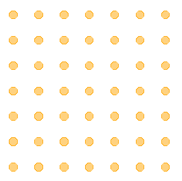
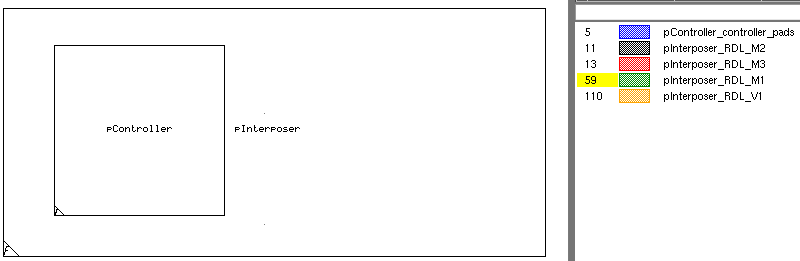
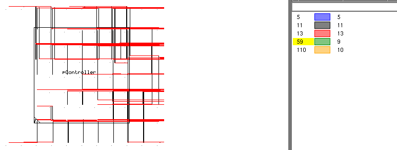

export_template {-chip chip_name } | {-placement placement_name
{[-neighbor layer [-bump value]] … } [-clip distance] } -file output_file
[-system {GDS | OASIS}]
Argument and value set that specifies the chip name to export (chip names are defined using the layout command). You must specify either this argument or the -placement argument. The layer properties and layer map files are generated when export_template -chip is specified in your rule file.
Argument and value set that specifies an existing placement in the assembly to export. You must specify either this argument or the -chip argument. The layer properties and layer map files are generated when export_template -placement is specified in your rule file.
Optional argument set that specifies a layer in the assembly to export with the specified placement. Multiple layers require a separate ‑neighbor layer argument pair for each layer. This option can only be used with the -placement argument.
Optional argument set that increments the layer number of the layer by an integer value. This argument can be specified for each -neighbor layer pair.
Optional argument set that specifies a clipping distance in microns around the chip extent to exclude from the exported layout. The -clip argument accepts positive floating-point numbers and can only be specified once for each export_template command.
Required argument and value set that specifies the name of the output file. Each application of the export_template command requires a unique output_file name.
Optional argument that specifies the layout system. The default is GDS.
Exports the specified chip or placement from the 3D assembly to a GDS or OASIS file. Layers are written (with their original layer numbers) only if they are declared in layer commands for the specified chip_name. The output file is written using the precision of the input files. Empty layers are supported. Layermap and layer properties files for Calibre DESIGNrev are exported automatically using the same naming convention.
Export a GDS for the controller chip in the assembly.
layout -chip_name controller -primary controller \
-path ${dsn_dir}/controller.gds -system GDS -original_extent
…
export_template -chip controller -file controller_export.gds -system GDS
The exported layout contains the layout of the controller chip as shown in the following figure. In this example, the original controller only contains pad shapes.

Export a GDS for the placement of the controller chip in the assembly. This example also specifies to include some of the surrounding interconnect layers on the interposer. The -bump argument for each included layer increments the layer number by the specified integer value.
layout -chip_name controller -primary controller \
-path ${dsn_dir}/controller.gds -system GDS -original_extent
place_chip -placement pController -chip controller \
-x_origin $controller_x -y_origin $controller_y
export_template -file pController.gds -system GDS -placement pController \
-neighbor pInterposer_RDL_M1 -bump 50 -neighbor pInterposer_RDL_V1 \
-bump 100 -neighbor pInterposer_RDL_M2 -neighbor pInterposer_RDL_M3

Export an OASIS layout for the placement of the controller chip in the assembly. This is the same as the previous example, except that the included layers are clipped at 15 um from the edge of the controller placement.
export_template -file pController_clipped.oas -system OASIS \
-placement pController -neighbor pInterposer_RDL_M1 -bump 50 \
-neighbor pInterposer_RDL_V1 -bump 100 -neighbor pInterposer_RDL_M2 \
-neighbor pInterposer_RDL_M3 -clip 15
